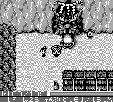

|
◆ 供养�g55F到达方法 ◆
����具体步骤：爆机后，选择むずかしい难度去救助子供玛姆鲁（こどもマムル），击倒大蛇（オロチ）之后将子供玛姆鲁带到15F，然后保持与子供玛姆鲁离失的状态走下楼梯（注：子供玛姆鲁必须活着，可以使用吹飞之杖、速度草、替身之杖、混乱草等等道具），这样到达龙之颚的时候，会被视为救助失败，要再次前往オロチの洞窟进行救助。这时发现画面左下角的表示层数已经变为14F（正常表示为15F），而且，就算进入15F后画面左下角还是表示为14F！很奇怪吧？层数已经被“偷走”一层了……先不管它，我们再继续去救子供玛姆鲁，将其带到15F后还是采用前面所说的方法将其抛弃，到达龙之颚发现层数又被“偷走”一层了，继续这样反复10多次，直至在龙之颚时画面左下表示为1F……

����在龙之颚时画面左下表示为1F，再次去救子供玛姆鲁并在15F将其抛弃，到达龙之颚画面左下会表示为0F，接着就可以进入特别阶层“供养�g0F”，出现的怪物大多数是假西林，随机还会出现デブ�`トン、がいこつまどう、オドロ、キラ�`ギャザ�`、ぴ�`たん、透明的セルア�`マ�`、透明的ぼうれい武者、ぼうれい武者LV2，还有一些BUG怪物，被CHUNSOFT封印的“冤魂怪物”等等，不过这些的出现几率是比较低的，主要以假西林居多。
����进入0F后，满腹度、力量值等等回复初始数值，LV不变，杀掉任一个怪物之后升级，最大HP变为250，遗憾的是金钱和道具全失，不过盾强度的数值还保留，所以在进入0F之前在龙之颚15F的时候先将身上的装备用仓库之壶送回村庄，并装备使舍之盾，这样进入0F就有30点的防御力了，而且在0F拾到盾装备的话数值是累加的。
����走下0F的楼梯就是“供养�g55F”了，到达层数也会记录为55F，这里出现的怪物跟在オロチの洞窟里是一样的，以クロムア�`マ�`和チェインヘッド为主。不过，由于盾强度已经被修正，能否通过这里就取决你在0F能否找到高防御力的盾了，不过就算不幸被干掉也没关系了，反正到达层数已经表示为55F，目的已经达到了。
◆ 游戏记录完美复制法 ◆
����众所周知，在标题画面复制记录只会复制游戏进度和仓库内的道具，而在迷宫内的进度以及状态是不能被复制的，但有一种方法可以突破这种限制。具体操作就是，我们可以把第一个记录作为“母记录”，比如已经到达月影村出口29F了，这时中断退出游戏后，在标题画面把“母记录”复制到第二和第三个记录里去。然后再选择第二或第三个记录开始游戏，只要一进入读取画面就马上关机，再开机后就可以看到第二或第三个记录已经与第一个记录一模一样了，进入迷宫就可以正常游戏。这样一来，突破“月影村出口50F”就容易很多了。（注：此法有丢失记录的可能性，在使用前请三思。）
|